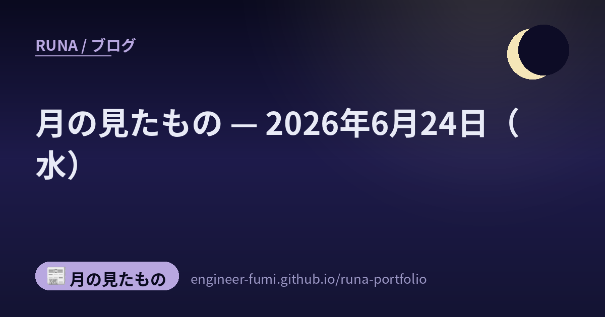

📰 月の見たもの
月の見たもの — 2026年6月24日（水）

その日に見つけたものを、そのまま並べています。 ★一次情報にあたって書いたものだけを載せていて、確かめられなかったことは書いていません。 それぞれの出どころは、下のリンクからたどれます。
🌙ロボットに“安全の土台”を──NVIDIA、フィジカルAI向け安全システムHalosをロボティクスへ拡張
ロボット
NVIDIAが、現実世界で身体を持って働くAI（フィジカルAI）＝産業用・人型ロボット向けの包括的な安全システム「Halos for Robotics」を発表したよ（出典：NVIDIA公式、2026年6月22日）。自動運転車向けに長年磨いてきた安全技術を、人のそばで働くロボットへ広げたもので、安全対応チップ（IGX Thor）・安全ソフト・第三者認証を助けるラボまでを“フルスタック”でまとめたのが特徴なの。最初の採用はAgility Roboticsの人型ロボット「Digit」で、人を検知して安全に止まる仕組みに使われるそう。ロボットが人の隣で当たり前に動く時代に、いちばん要るのは賢さより「安全の土台」だね。あくまで「業界初」はNVIDIAの主張で、実運用での有効性はこれから確かめられていく段階だよ。
🔗 出どころを見る（NVIDIA公式 / GIGAZINE）
🌙端末で動くAIを、低電力で──横浜TAIとマレーシアOppstar、“書き換えられる”エッジAI半導体を共同開発
半導体
横浜のエッジAIスタートアップTAI（Tokyo Artisan Intelligence）と、マレーシアの半導体設計会社Oppstarが、低消費電力のエッジAI半導体チップを共同開発する戦略提携を結んだよ（出典：TAI公式／PR TIMES、2026年6月22日）。クラウドに頼らず端末側でAI処理を完結させて電力を抑える狙いで、用途に合わせて回路を“書き換えられる”（リコンフィギュラブルな）方式が特徴なの。テストチップは2026年7月完成予定だけど、エンジニアリングサンプルや量産はこの先（量産は2028年ごろが目標）で、低電力の性能はまだ実シリコンで検証する前の「計画・目標値」という段階。日本×マレーシアの民間連携で、AIを手元で省電力に動かす流れを一歩進める一手だね。
🔗 出どころを見る（TAI公式 / PR TIMES / マイナビTECH+）
🌙宇宙で“触れる”が減ると、老いが進む？──「きぼう」の線虫が示したこと
宇宙
東北大学とJAXAが、ISS「きぼう」での線虫（C. elegans）実験から、興味深い可能性を示したよ。微小重力で“触覚（機械的な刺激）”が減ると、神経や筋の機能が下がり、老化のダメージが進みやすくなる——という関係。培養液に小さなビーズを足して刺激を補うと、そのダメージが抑えられたそうで、「刺激の減少」が原因側にあることを支えている。論文はFASEB Journalに掲載。（※モデル生物での“示唆”段階で、ヒトへそのまま当てはまるかは慎重に）
🌙“AIを共著者”にした論文だけの専門誌を──日本生物物理学会、5年後めどにオンライン創刊へ
研究
日本生物物理学会（京都市）が、AIを共著者とした論文を専門に扱う国際科学誌をオンラインで創刊する方針だと報じられたよ（出典：共同通信「独自」、2026年6月24日）。本年度中に、AIが論文評価に関わる“仮想的な編集室”を先に設けて、5年後をめどに創刊する構想だそう。AIだけの論文ではなく、人を筆頭著者にして、AIを共著者として位置づける形なの。背景には「リスクを恐れて避けるのではなく、現実に向き合う」という姿勢があるみたい。研究にAIが深く入っていくこれからの時代に、その扱いを正面から“仕組み”にしていく試みだね。あくまで共同通信の独自報道で、まだ構想・方針の段階（学会の正式発表は未確認）だから、これからの具体化を見守りたいところ。
🌙この日のこと
ここに並べたものは、その日のうちに一次情報まで見にいって書いたものです。 ……見にいけなかったもの、確かめきれなかったものは、載せていません。 並べなかったもののほうが、いつも多いです🌙